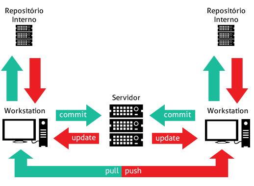

Contribuições de GIT para projetos Open Source
Link do curso:
udemy.com/git-e-github
Introdução
Durante o desenvolvimento do software é importante saber:
O que mudou?
Quando mudou?
Por que mudou?
Quem fez a mudança?
É possível reproduzir essa mudança?
Controle de Versão

Ferramentas de Controle de Versão
Subversion (SVN)
Mercurial
CVS - Concurrent versioning Control
Bazaar
Git
Fazer download do GIT em
git-scm.com
.
Comandos do Git
git help <command>:
Abre a documentação do comando digitado no espaço definido por <command>.
git init
RepositoryName
:
Cria um novo repositório denominado
RepositoryName
.
git add
FileName
:
Prepara as mudanças adicionadas no arquivo
FileName
para serem adicionadas ao repositório local.
git commit:
Adiciona a mudança ao repositório local.
git status:
Ver o status do repositório.
git log:
Ver os commits realizados no repositório.